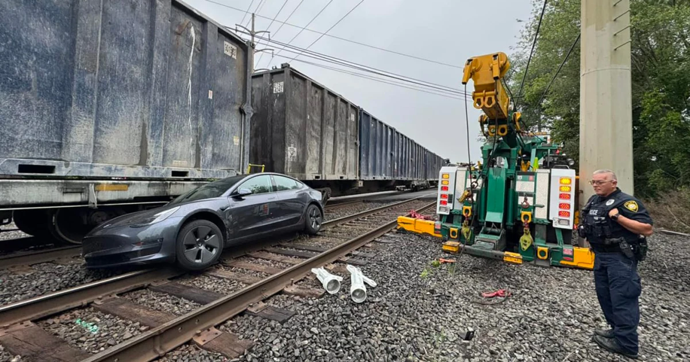
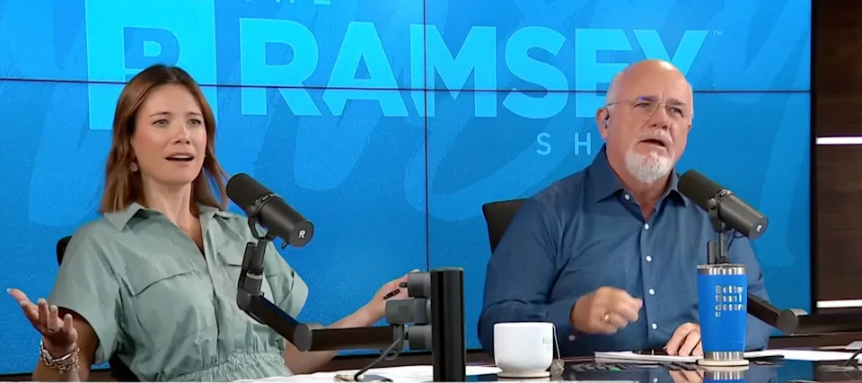
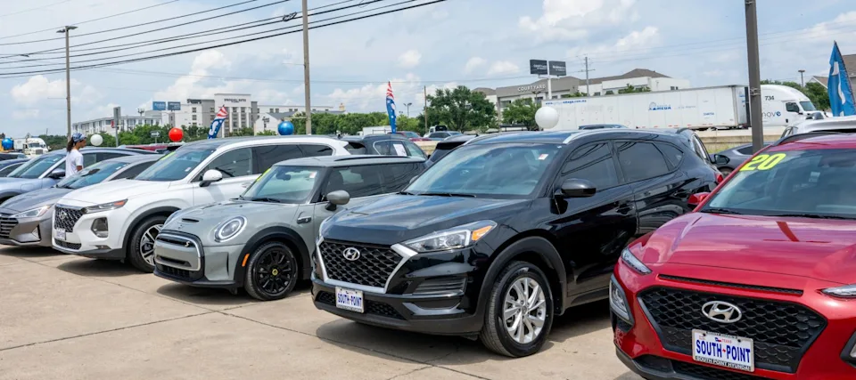
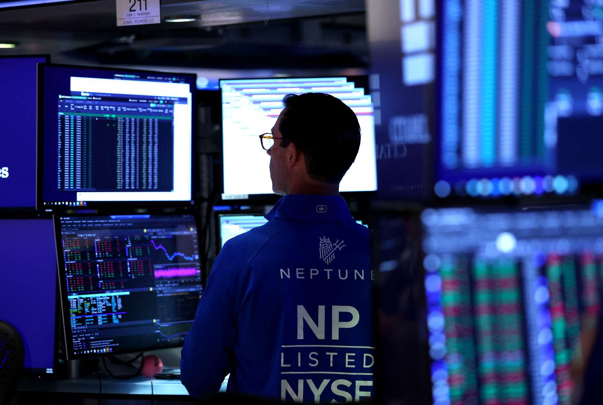
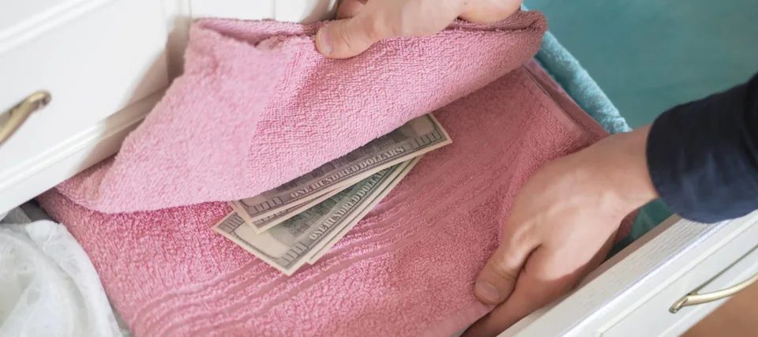
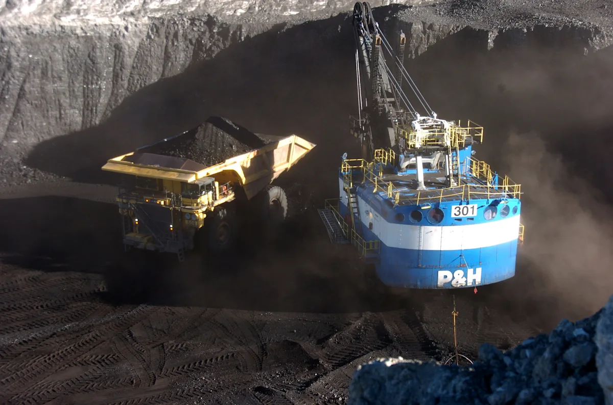
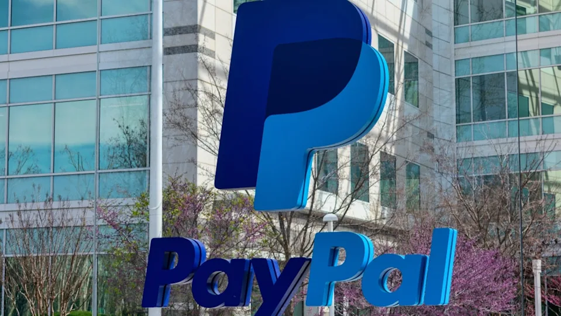

Waneye Financial Overview
Last updated: 2025-10-04 17:28 UTC
Financial Analysis Report
October 04, 2025 at 17:27Executive Summary
Key Highlights
- Major indices hit new records despite government shutdown concerns
- AI sector continues leading market rally with Nvidia and other AI stocks near buy points
- Gold surges above $3,900 as shutdown fuels uncertainty and delays key economic data
- Labor market shows mixed signals with jobless claims falling but companies shedding 32,000 jobs
- M&A activity heats up with Charter-Liberty Broadband deal and potential Moncler-Burberry acquisition
- Geopolitical tensions rise with Putin's nuclear doctrine update and Gaza peace deal progress
- Federal Reserve leadership uncertainty persists as Trump challenges Lisa Cook's position
- Quantum computing stocks surge on government support and technological optimism
- Bitcoin rally continues with Standard Chartered predicting $135,000 target
- Productivity slows while unit labor costs accelerate, raising inflation concerns
Market Sentiment
Market Insights
Sector Analysis
Technology/AI
Strong bullish momentum with Nvidia leading AI rally, multiple AI stocks near buy points
AI infrastructure and computing companies benefiting from continued investment, though bubble concerns emerging from Bezos and other tech leadersFinancials
Mixed performance with Barclays reporting strong profits but credit market dispersion concerns
Rising interest in private assets for retirement, stablecoin growth with PayPal's PYUSD exceeding $1B market capHealthcare
Positive momentum with Novartis raising guidance, Wegovy pill launch planned for 2026
Healthcare rally contributing to S&P record close, pharmaceutical innovation driving sector growthConsumer Discretionary
Mixed results with Amazon reporting record holiday sales but Wingstop missing profit estimates
Early holiday shopping trends emerging, consumer credit growth indicating continued spendingEnergy/Commodities
Gold surging on uncertainty, Bitcoin rally continuing, quantum and rare earth metals gaining
Safe-haven assets in demand, critical minerals gaining strategic importanceKey Market Themes
- AI Dominance and Bubble Concerns
- Government Shutdown Impact on Economic Data
- Geopolitical Tensions (Gaza, Russia Nuclear Doctrine)
- M&A Activity Acceleration
- Quantum Computing Breakthrough Optimism
- Labor Market Mixed Signals
- Federal Reserve Policy Uncertainty
- Cryptocurrency Resurgence
- Inflation and Productivity Concerns
- International Trade Realignments
Risk Assessment
Government Shutdown Prolongation
Mitigation: Monitor key economic data releases, focus on private sector indicators, maintain cash reservesGeopolitical Escalation (Russia Nuclear Doctrine)
Mitigation: Diversify internationally, increase gold/defensive allocations, monitor diplomatic developmentsAI Bubble Concerns
Mitigation: Focus on profitable AI companies, avoid speculative names, maintain balanced sector exposureLabor Market Deterioration
Mitigation: Monitor jobless claims trends, focus on companies with strong balance sheets, defensive sectorsFederal Reserve Leadership Uncertainty
Mitigation: Prepare for policy volatility, focus on quality bonds, monitor inflation expectationsStrategic Recommendations
Investment Opportunities
Increase exposure to established AI infrastructure leaders
medium-termNvidia and other AI plays showing strong momentum with clear buy points, continued enterprise adoption
Add quantum computing and rare earth exposure
long-termGovernment support driving sector growth, strategic importance in tech supply chains
Consider gold and Bitcoin as hedge assets
short-termBoth assets showing strong momentum amid uncertainty, institutional adoption increasing
Defensive Strategies
Maintain elevated cash positions
short-termGovernment shutdown creating data gaps, geopolitical tensions rising, market at records
Reduce exposure to companies with Fed sensitivity
medium-termLeadership uncertainty and potential policy shifts creating volatility risk
Avoid highly speculative AI names
short-termBubble warnings from industry leaders, focus on companies with clear revenue paths
Market Outlook
Short-term Outlook (1-3 months)
Cautiously optimistic with continued AI leadership but heightened volatility from geopolitical and political uncertainty. Government shutdown limiting economic visibility creates near-term headwinds.
Long-term Outlook (6-12 months)
Structural trends in AI, quantum computing, and digital assets remain compelling. Labor market normalization and Fed policy clarity needed for sustained bull market continuation.
Key Market Catalysts
- Government shutdown resolution and economic data release
- Fed leadership decisions and policy direction
- Gaza peace deal implementation progress
- Q3 earnings season beginning in October
- AI infrastructure spending announcements
- Bitcoin ETF flows and institutional adoption
- Geopolitical developments with Russia and China
Monitor Closely
- Jobless claims and labor market data
- Inflation indicators (when available)
- Fed official statements and policy signals
- AI company earnings and guidance
- Gold and Bitcoin price action
- Quantum computing development milestones
- Geopolitical tension indicators
- M&A deal flow and activity
- Consumer spending and credit data
- Productivity and unit labor cost trends











US Federal Reserve - Economy at a Glance
Policy Rates
- Federal Reserve: Rate not found
- European Central Bank: Rate not found
- Bank of England: Could not fetch rate (Request Error)
- Bank of Japan: Could not fetch rate (Request Error)
- Swiss National Bank: Could not fetch rate (Request Error)
- Bank of Canada: Rate not found
- Reserve Bank of Australia: 3.60%
- People's Bank of China: Rate not found
- Reserve Bank of New Zealand: Could not fetch rate (Request Error)
| Pair | Bid | Ask | Change |
|---|---|---|---|
| EUR/USD | 1.085 | 1.0852 | -0.0002 |
| USD/JPY | 155.2 | 155.23 | 0.05 |